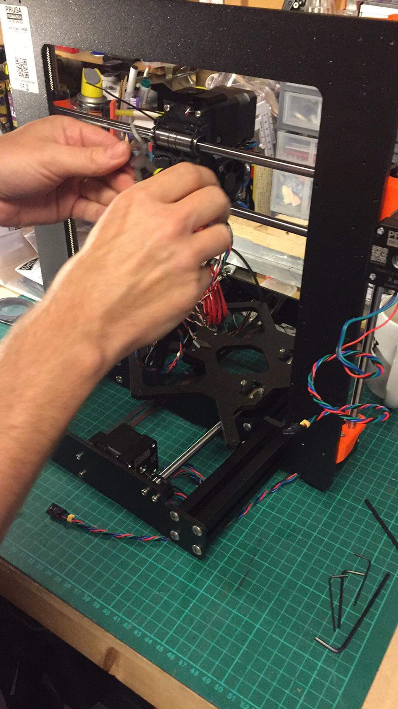
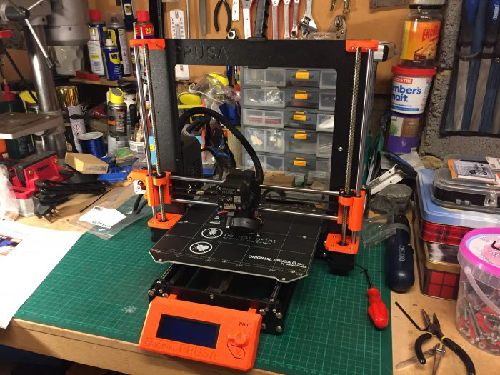
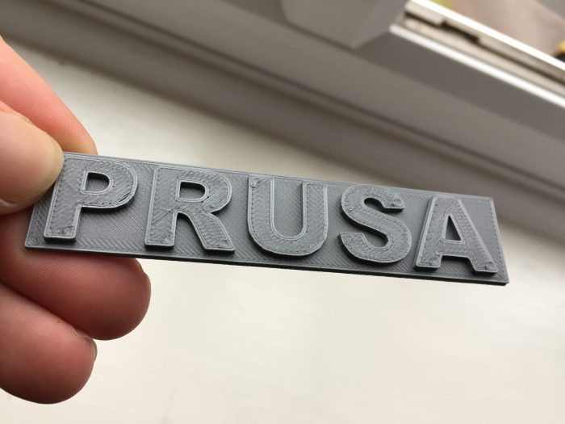
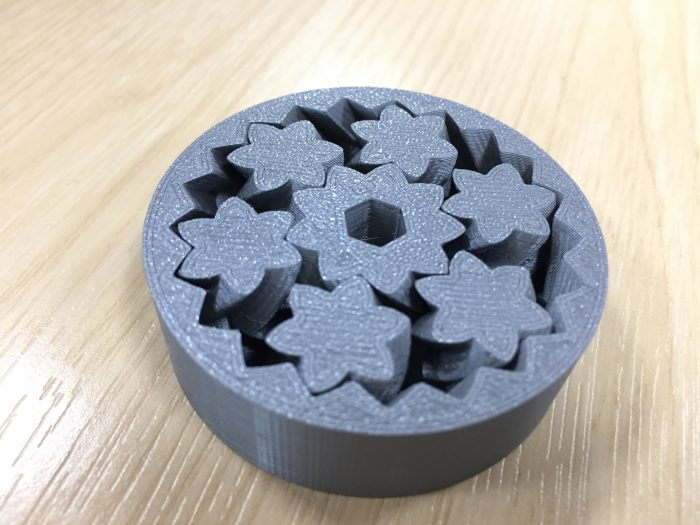
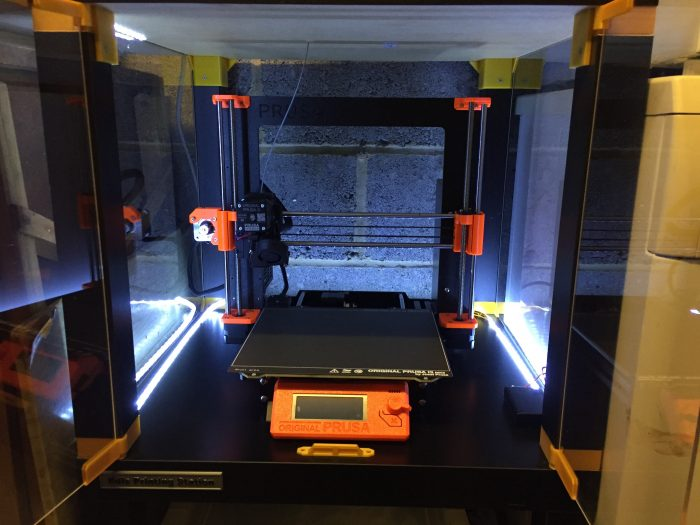

After several months of deliberation and research, I finally decided to take the plunge into the world of 3D printing.
As a professional software developer, a 3D graphics enthusiast, and someone who has always had an interest in making things (See my Useless Box), a 3D printer is the perfect way of combing all these activities.
Which Printer?
There are a lot of 3D printers out there. Initially even a modest kit was too expensive to be realistic (for me at least), but over the last year or so prices have come down into a much more affordable range.
I wanted a printer that would ‘just work’ – Something reliable, with a build volume large enough that I could make robots, tools, and house gadgets without too much problem.
Prusa printers have got a reputation for being very good, and not too expensive. Their Mk3s has a decent build volume, and is offered as a kit or pre-assembled.
Wanting to get to know the printer (and save £100!), I opted for the kit. A few weeks after receiving and assembling it, I have no regrets.
The assembly instructions are faultless. You get a full colour manual, backed by web content which goes into even more depth and has comments from people who have gone through the building process.
With some perseverance, a pack of Gummie Bears (shipped with the printer and with clear instructions as to when/how many to eat during each phase of the build), my printer was complete.


First Prints

First print! 
Very cool – Prints ‘in place’ with no assembly required!
The Mk3s comes with an SD card pre-loaded with models ready to print, and a 1kg reel of PLA filament, so you can test the printer before needing to get to know how to design/download/slice your own models.
I had no problems at all. The prints stuck to the (textured) print bed perfectly, and came off after the print almost magically – When the print bed cools down it contracts at a slightly different rate to the printed PLA. After 10-15 minutes the plastic that was previously almost-glued to the sheet comes off with barely a ‘pop’. No glue sticks or tape required!
The ‘Workstation’
As the printer is going to live in my garage (alongside the fridge, freezer, and tumble dryer!) I figured it’d be A Smart Move to put it into some sort of enclosure.
Thankfully the guys at Prusa have you covered for this too. A quick trip to Ikea for some cheap ‘Lack’ tables and you can 3D print (nearly) all the parts needed to turn this:
…Into this…
